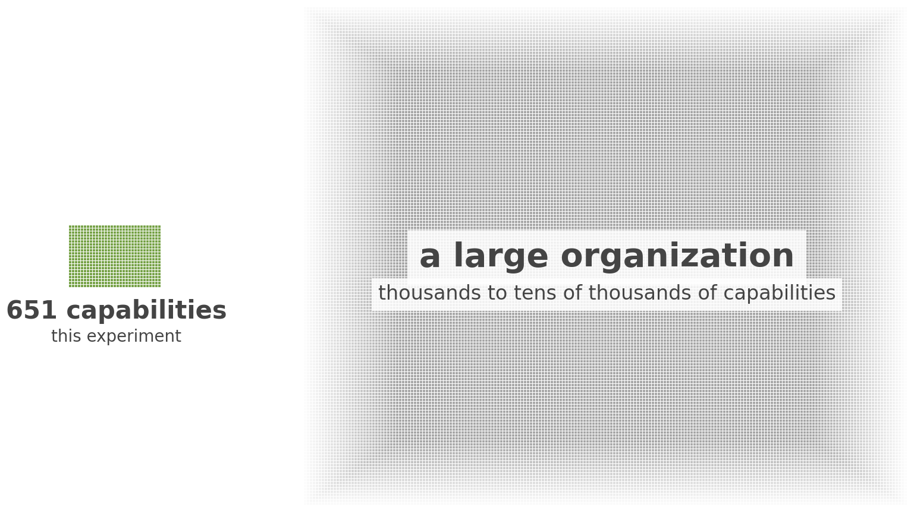
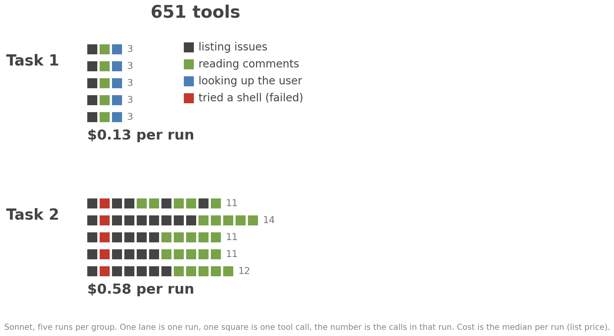
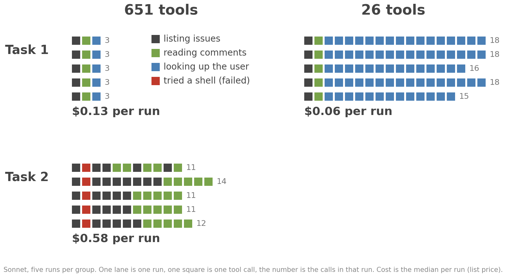
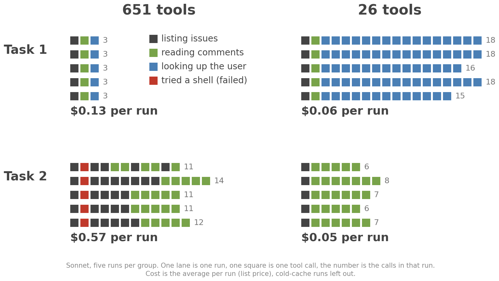
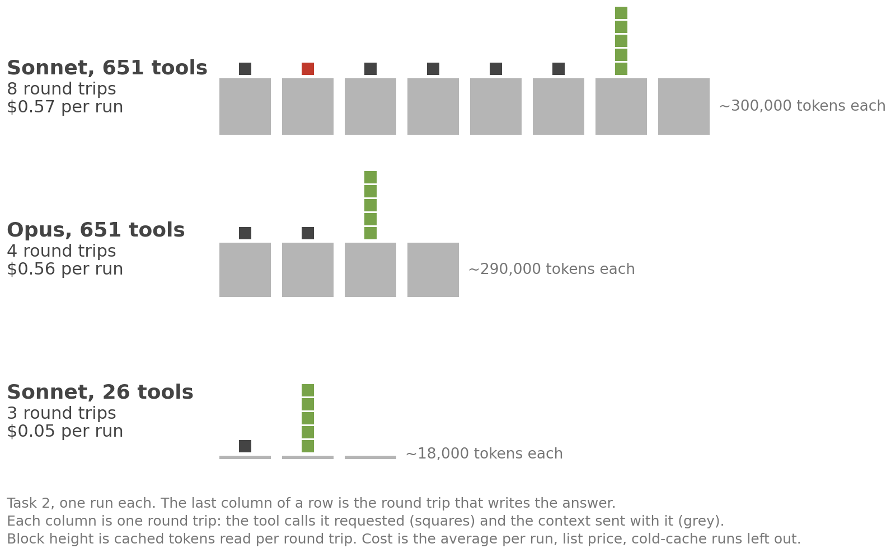
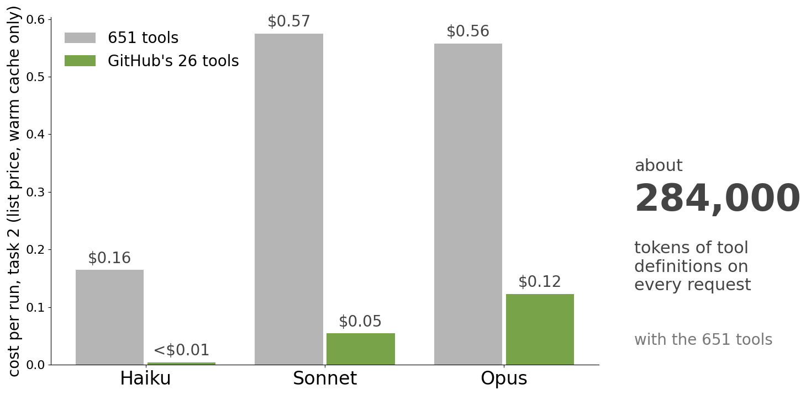

A Small Experiment
(14) The Data and the Code Are in a Public Repo
[https://github.com/dret/w-jax-2026-ai-integration]
(15) 651 Tools Is Tiny Compared to a Real Organization

(16) More Complex Task, Same Plan, Different Execution

(17) No Fitting Tool: The Model Fights the Limitations

(18) Tools That Fit the Task: Easy and Cheap

(19) Every Round Trip Sends the Whole Context Again

(20) Per Run, 651 Tools Cost 4 to 40 Times More

(21) The Creation Date Is in the OpenAPI Description
# GitHub OpenAPI description (excerpt)
paths:
/users/{username}:
get:
operationId: users/get-by-username
summary: Get a user
responses:
"200":
content:
application/json:
schema:
oneOf:
- $ref: "#/components/schemas/private-user"
- $ref: "#/components/schemas/public-user"
components:
schemas:
public-user:
required: [login, id, ..., created_at, ...]
properties:
created_at:
type: string
format: date-time
(24) Every Pull Request Is an Issue, and the Description Says So
# GitHub OpenAPI description (excerpt)
paths:
/repos/{owner}/{repo}/issues:
get:
operationId: issues/list-for-repo
summary: List repository issues
description: |
List issues in a repository. Only open issues will be listed.
> [!NOTE]
> GitHub's REST API considers every pull request an issue, but
> not every issue is a pull request. For this reason, "Issues"
> endpoints may return both issues and pull requests in the
> response. You can identify pull requests by the `pull_request`
> key. [...]
(25) The Response Is Too Big for the Tool Result: 13 of 15 Runs
# Tool result the model received (issues/list-for-repo, 651 generated tools)
content:
- type: text
text: |
Error: result (118,565 characters) exceeds maximum allowed tokens.
Output has been saved to /.../tool-results/mcp-github-generated-issueslist_for_repo-1793097151521.txt.
Format: JSON with schema: {result: [{...}]}
Use jq to make structured queries (find a value, filter by field).
[...]